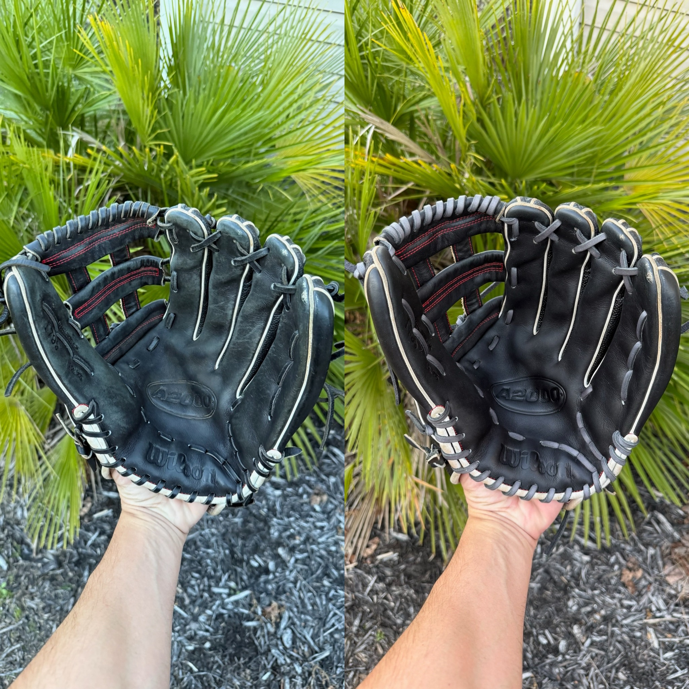
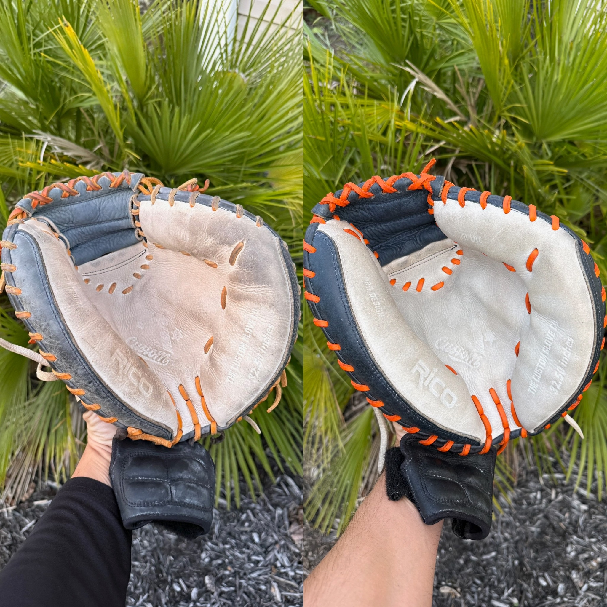
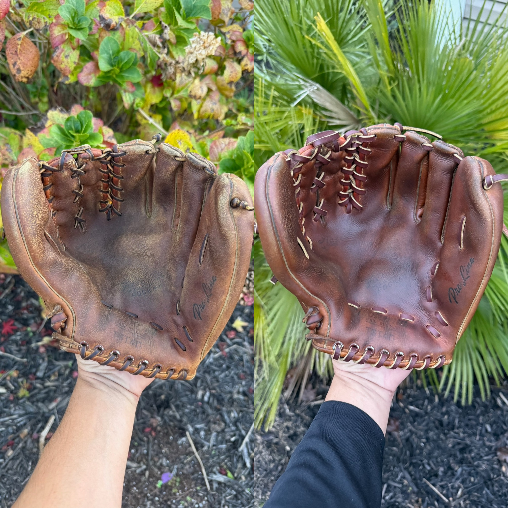
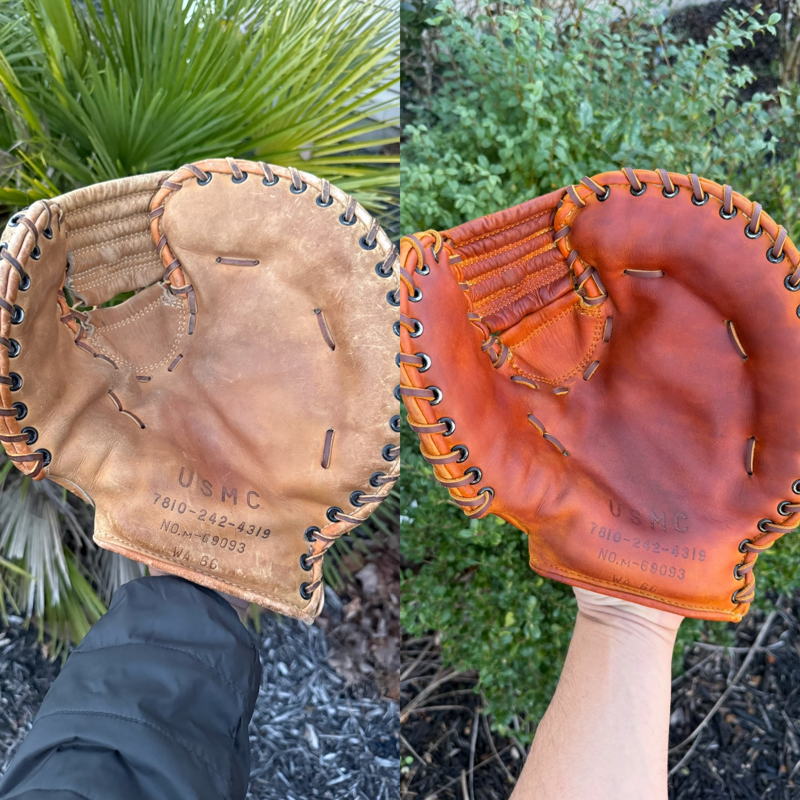
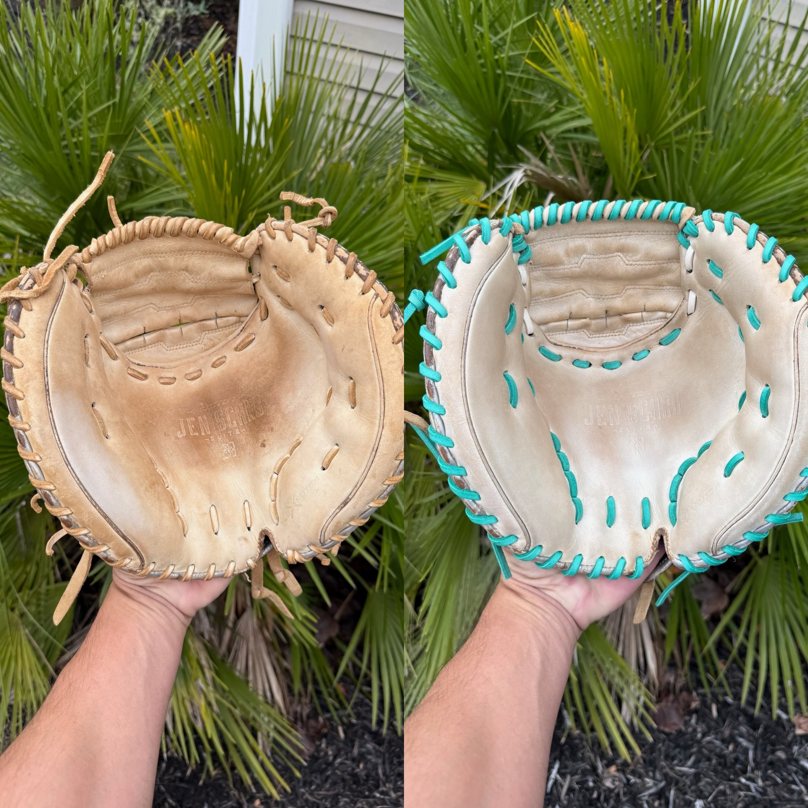
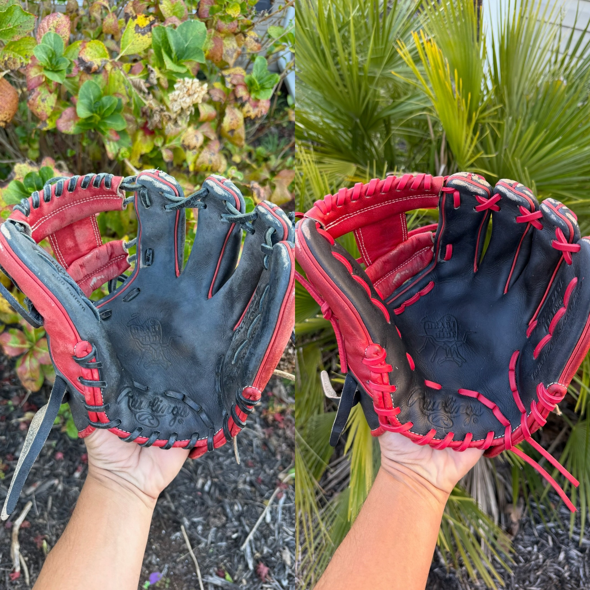

Before & After
A small selection of gloves that showed up hopeless and left with a second chance.








A small selection of gloves that showed up hopeless and left with a second chance.





